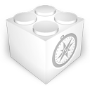

CronTab

alt+tab
switch to the previous active tab
hold 'alt' a little longer to pop up a list of chronologically sorted tabs
traverse through the list with 'tab' and release the 'alt' to land on the tab
exception! If the page don't load then 'alt+tab' won't work.
you got to click the toolbar button to switch and force click to pop up the list
restart your browser after installation